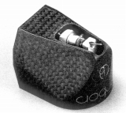
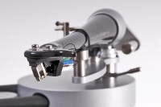

WILSON BENESCH（ウィルソン・ベネシュ）
【注意事項】
1989年設立のイギリスのブランド。日本には1990年代半ばに紹介された。カーボンファイバーを材質とした製品に特長があり、ターンテーブルやスピーカーの他、当サイトの対象であるカートリッジ、アームにもカーボンが使われている。代理店はステラヴォックスジャパン�梶i2012年に�潟Xテラに改名。）
�T.カートリッジ

Matrix Carbon Analog
�U.アーム

ACT0.5 ACT2
サイトマップへ